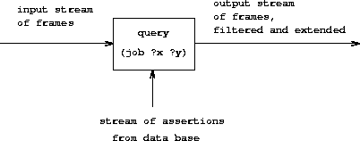

|
In chapter 1 we stressed that computer science deals with imperative(how to) knowledge, whereas mathematics deals with declarative (whatis) knowledge. Indeed, programming languages require that theprogrammer express knowledge in a form that indicates the step-by-stepmethods for solving particular problems. On the other hand,high-level languages provide, as part of the language implementation,a substantial amount of methodological knowledge that freesthe user from concern with numerous details of how a specifiedcomputation will progress.
Most programming languages, including Lisp, are organized aroundcomputing the values of mathematical functions. Expression-orientedlanguages (such as Lisp, Fortran, and Algol) capitalize on the “pun”that an expression that describes the value of a function may also beinterpreted as a means of computing that value. Because of this, mostprogramming languages are strongly biased toward unidirectionalcomputations (computations with well-defined inputs and outputs).There are, however, radically different programming languages thatrelax this bias. We saw one such example insection 3.3.5, where the objects of computation werearithmetic constraints. In a constraint system the direction and theorder of computation are not so well specified; in carrying out acomputation the system must therefore provide more detailed “how to”knowledge than would be the case with an ordinary arithmeticcomputation. This does not mean, however, that the user is releasedaltogether from the responsibility of providing imperative knowledge.There are many constraint networks that implement the same set ofconstraints, and the user must choose from the set of mathematicallyequivalent networks a suitable network to specify a particularcomputation.
The nondeterministic program evaluator ofsection 4.3 also moves away from theview that programming is about constructing algorithms for computingunidirectional functions. In a nondeterministic language, expressionscan have more than one value, and, as a result, the computation isdealing with relations rather than withsingle-valued functions. Logic programming extends this idea bycombining a relational vision of programming with a powerful kind ofsymbolic pattern matching called unification.58
This approach, when it works, can be a very powerful way to writeprograms. Part of the power comes from the fact that a single “whatis” fact can be used to solve a number of different problems thatwould have different “how to” components. As an example, considerthe append operation, which takes two lists as arguments andcombines their elements to form a single list. In a procedurallanguage such as Lisp, we could define append in terms of thebasic list constructor cons, as we did insection 2.2.1:
(define (append x y) (if (null? x) y (cons (car x) (append (cdr x) y))))
This procedure can be regarded as a translation into Lisp of thefollowing two rules, the first of which covers the case where thefirst list is empty and the second of which handles the case of anonempty list, which is a cons of two parts:
y, the empty list and y append to form y.
u, v, y, and z, (cons u v) and y append to form (cons u z)if v and y append to form z.59Using the append procedure, we can answer questions such as
Find theappendof(a b)and(c d).
But the same two rules are also sufficient for answering the followingsorts of questions, which the procedure can't answer:
Find a listythatappends with(a b)to produce(a b c d).Find all
xandythatappendto form(a b cd).
In a logic programming language, the programmer writes an append“procedure” by stating the two rules about append given above.“How to” knowledge is provided automatically by the interpreter toallow this single pair of rules to be used to answer all three typesof questions about append.60
Contemporary logic programming languages (including the one weimplement here) have substantial deficiencies, in that their general“how to” methods can lead them into spurious infinite loops or otherundesirable behavior.Logic programming is an active field of research in computer science.61
Earlier in this chapter we explored the technology of implementinginterpreters and described the elements that are essential to aninterpreter for a Lisp-like language (indeed, to an interpreter forany conventional language). Now we will apply these ideas to discussan interpreter for a logic programming language. We call thislanguage the query language, because it is very useful forretrieving information from data bases by formulating queries,or questions, expressed in the language. Even though the querylanguage is very different from Lisp, we will find it convenient todescribe the language in terms of the same general framework we havebeen using all along: as a collection of primitive elements, togetherwith means of combination that enable us to combine simple elements tocreate more complex elements and means of abstraction that enable usto regard complex elements as single conceptual units. An interpreterfor a logic programming language is considerably more complex than aninterpreter for a language like Lisp. Nevertheless, we will seethat our query-language interpreter contains many of the same elementsfound in the interpreter of section 4.1. In particular,there will be an “eval” part that classifies expressions accordingto type and an “apply” part that implements the language'sabstraction mechanism (procedures in the case of Lisp, and rulesin the case of logic programming). Also, a central role is played inthe implementation by a frame data structure, which determines thecorrespondence between symbols and their associated values. Oneadditional interesting aspect of our query-language implementation isthat we make substantial use of streams, which were introduced inchapter 3.
Logic programming excels in providing interfaces to data bases forinformation retrieval. The query language we shall implement in thischapter is designed to be used in this way.
In order to illustrate what the query system does, we will show how itcan be used to manage the data base of personnel records forMicroshaft, a thriving high-technology company in theBoston area. The language provides pattern-directed access topersonnel information and can also take advantage of general rules inorder to make logical deductions.
The personnel data base for Microshaftcontains assertions about company personnel. Here is theinformation about Ben Bitdiddle, the resident computer wizard:
(address (Bitdiddle Ben) (Slumerville (Ridge Road) 10)) (job (Bitdiddle Ben) (computer wizard)) (salary (Bitdiddle Ben) 60000)
Each assertion is a list (in this case a triple) whose elements canthemselves be lists.
As resident wizard, Ben is in charge of the company's computerdivision, and he supervises two programmers and one technician. Hereis the information about them:
(address (Hacker Alyssa P) (Cambridge (Mass Ave) 78)) (job (Hacker Alyssa P) (computer programmer)) (salary (Hacker Alyssa P) 40000) (supervisor (Hacker Alyssa P) (Bitdiddle Ben)) (address (Fect Cy D) (Cambridge (Ames Street) 3)) (job (Fect Cy D) (computer programmer)) (salary (Fect Cy D) 35000) (supervisor (Fect Cy D) (Bitdiddle Ben)) (address (Tweakit Lem E) (Boston (Bay State Road) 22)) (job (Tweakit Lem E) (computer technician)) (salary (Tweakit Lem E) 25000) (supervisor (Tweakit Lem E) (Bitdiddle Ben))
There is also a programmer trainee, who is supervised by Alyssa:
(address (Reasoner Louis) (Slumerville (Pine Tree Road) 80)) (job (Reasoner Louis) (computer programmer trainee)) (salary (Reasoner Louis) 30000) (supervisor (Reasoner Louis) (Hacker Alyssa P))
All of these people are in the computer division, as indicated by theword computer as the first item in their job descriptions.
Ben is a high-level employee. His supervisor is the company's bigwheel himself:
(supervisor (Bitdiddle Ben) (Warbucks Oliver)) (address (Warbucks Oliver) (Swellesley (Top Heap Road))) (job (Warbucks Oliver) (administration big wheel)) (salary (Warbucks Oliver) 150000)
Besides the computer division supervised by Ben, the company has anaccounting division, consisting of a chief accountant and hisassistant:
(address (Scrooge Eben) (Weston (Shady Lane) 10)) (job (Scrooge Eben) (accounting chief accountant)) (salary (Scrooge Eben) 75000) (supervisor (Scrooge Eben) (Warbucks Oliver)) (address (Cratchet Robert) (Allston (N Harvard Street) 16)) (job (Cratchet Robert) (accounting scrivener)) (salary (Cratchet Robert) 18000) (supervisor (Cratchet Robert) (Scrooge Eben))
There is also a secretary for the big wheel:
(address (Aull DeWitt) (Slumerville (Onion Square) 5)) (job (Aull DeWitt) (administration secretary)) (salary (Aull DeWitt) 25000) (supervisor (Aull DeWitt) (Warbucks Oliver))
The data base also contains assertions about which kinds of jobs canbe done by people holding other kinds of jobs. For instance, acomputer wizard can do the jobs of both a computer programmer and acomputer technician:
(can-do-job (computer wizard) (computer programmer)) (can-do-job (computer wizard) (computer technician))
A computer programmer could fill in for a trainee:
(can-do-job (computer programmer) (computer programmer trainee))
(can-do-job (administration secretary) (administration big wheel))
The query language allows users to retrieve information from the database by posing queries in response to the system's prompt. Forexample, to find all computer programmers one can say
;;; Query input: (job ?x (computer programmer))
The system will respond with the following items:
;;; Query results: (job (Hacker Alyssa P) (computer programmer)) (job (Fect Cy D) (computer programmer))
The input query specifies that we are looking for entries in the database that match a certain pattern. In this example, the patternspecifies entries consisting of three items, of which the first is theliteral symbol job, the second can be anything, and the third isthe literal list (computer programmer). The “anything” thatcan be the second item in the matching list is specified by a pattern variable, ?x. The general form of a pattern variableis a symbol, taken to be the name of the variable, preceded by aquestion mark. We will see below why it is useful to specify namesfor pattern variables rather than just putting ? into patternsto represent “anything.” The system responds to a simple query byshowing all entries in the data base that match the specified pattern.
A pattern can have more than one variable. For example, the query
(address ?x ?y)
will list all the employees' addresses.
A pattern can have no variables, in which case the query simplydetermines whether that pattern is an entry in the data base. If so,there will be one match; if not, there will be no matches.
The same pattern variable can appear more than once in a query,specifying that the same “anything” must appear in each position.This is why variables have names. For example,
(supervisor ?x ?x)
finds all people who supervise themselves (though there are no suchassertions in our sample data base).
The query
(job ?x (computer ?type))
matches all job entries whose third item is a two-element list whosefirst item is computer:
(job (Bitdiddle Ben) (computer wizard)) (job (Hacker Alyssa P) (computer programmer)) (job (Fect Cy D) (computer programmer)) (job (Tweakit Lem E) (computer technician))
This same pattern does not match
(job (Reasoner Louis) (computer programmer trainee))
because the third item in the entry is a list of three elements, andthe pattern's third item specifies that there should be two elements.If we wanted to change the pattern so that the third item could be anylist beginning with computer, we could specify62
(job ?x (computer . ?type))
For example,
(computer . ?type)
matches the data
(computer programmer trainee)
with ?type as the list (programmer trainee). It alsomatches the data
(computer programmer)
with ?type as the list (programmer), and matches the data
(computer)
with ?type as the empty list ().
We can describe the query language's processing of simple queries asfollows:
Note that if the pattern has no variables, the query reduces to adetermination of whether that pattern is in the data base. If so, theempty assignment, which assigns no values to variables, satisfies thatpattern for that data base.
Exercise 4.55. Give simple queries that retrieve the following information from thedata base:
a. all people supervised by Ben Bitdiddle;
b. the names and jobs of all people in the accounting division;
c. the names and addresses of all people who livein Slumerville.
Simple queries form the primitive operations of the query language.In order to form compound operations, the query language providesmeans of combination. One thing that makes the query language a logicprogramming language is that the means of combination mirror the meansof combination used in forming logical expressions: and, or, and not. (Here and, or, and not are notthe Lisp primitives, but rather operations built into the querylanguage.)
We can use and as follows to find the addresses of all thecomputer programmers:
(and (job ?person (computer programmer)) (address ?person ?where))
The resulting output is
(and (job (Hacker Alyssa P) (computer programmer)) (address (Hacker Alyssa P) (Cambridge (Mass Ave) 78))) (and (job (Fect Cy D) (computer programmer)) (address (Fect Cy D) (Cambridge (Ames Street) 3)))
(and <query1> <query2> ... <queryn>)
is satisfied by all sets of values for the pattern variables thatsimultaneously satisfy <query1> ... <queryn>.
As for simple queries, the system processes a compound query byfinding all assignments to the pattern variables that satisfy thequery, then displaying instantiations of the query with those values.
Another means of constructing compound queries is through or.For example,
(or (supervisor ?x (Bitdiddle Ben)) (supervisor ?x (Hacker Alyssa P)))
will find all employees supervised by Ben Bitdiddle or Alyssa P.Hacker:
(or (supervisor (Hacker Alyssa P) (Bitdiddle Ben)) (supervisor (Hacker Alyssa P) (Hacker Alyssa P))) (or (supervisor (Fect Cy D) (Bitdiddle Ben)) (supervisor (Fect Cy D) (Hacker Alyssa P))) (or (supervisor (Tweakit Lem E) (Bitdiddle Ben)) (supervisor (Tweakit Lem E) (Hacker Alyssa P))) (or (supervisor (Reasoner Louis) (Bitdiddle Ben)) (supervisor (Reasoner Louis) (Hacker Alyssa P)))
In general,
(or <query1> <query2> ... <queryn>)
is satisfied by all sets of values for the pattern variables thatsatisfy at least one of <query1> ... <queryn>.
Compound queries can also be formed with not. For example,
(and (supervisor ?x (Bitdiddle Ben)) (not (job ?x (computer programmer))))
finds all people supervised by Ben Bitdiddle who are not computerprogrammers. In general,
(not <query1>)
is satisfied by all assignments to the pattern variables that do notsatisfy <query1>.63
The final combining form is called lisp-value. When lisp-value is the first element of a pattern, it specifies that thenext element is a Lisp predicate to be applied to the rest of the(instantiated) elements as arguments. In general,
(lisp-value <predicate> <arg1> ... <argn>)
will be satisfied by assignments to the pattern variables for which the<predicate> applied to the instantiated<arg1> ... <argn>is true. For example, to find all people whose salary is greater than$30,000 we could write64
(and (salary ?person ?amount) (lisp-value > ?amount 30000))
Exercise 4.56. Formulate compound queries that retrieve the following information:
a. the names of all people who are supervised by Ben Bitdiddle, togetherwith their addresses;
b. all people whose salary is less than Ben Bitdiddle's, together withtheir salary and Ben Bitdiddle's salary;
c. all people who are supervised by someone who is not in the computerdivision, together with the supervisor's name and job.
In addition to primitive queries and compound queries, the querylanguage provides means for abstracting queries. These are given byrules. The rule
(rule (lives-near ?person-1 ?person-2) (and (address ?person-1 (?town . ?rest-1)) (address ?person-2 (?town . ?rest-2)) (not (same ?person-1 ?person-2))))
specifies that two people live near each other if they live in thesame town. The final not clause prevents the rule from sayingthat all people live near themselves. The same relation isdefined by a very simple rule:65
(rule (same ?x ?x))
The following rule declares that a person is a “wheel” in anorganization if he supervises someone who is in turn a supervisor:
(rule (wheel ?person) (and (supervisor ?middle-manager ?person) (supervisor ?x ?middle-manager)))
The general form of a rule is
(rule <conclusion> <body>)
where <conclusion> is a pattern and <body> is anyquery.66 We can thinkof a rule as representing a large (even infinite) set of assertions,namely all instantiations of the rule conclusion with variableassignments that satisfy the rule body. When we described simplequeries (patterns), we said that an assignment to variables satisfiesa pattern if the instantiated pattern is in the data base. But thepattern needn't be explicitly in the data base as an assertion. Itcan be an implicit assertion implied by a rule. For example, thequery
(lives-near ?x (Bitdiddle Ben))
results in
(lives-near (Reasoner Louis) (Bitdiddle Ben)) (lives-near (Aull DeWitt) (Bitdiddle Ben))
To find all computer programmers who live near Ben Bitdiddle, we canask
(and (job ?x (computer programmer)) (lives-near ?x (Bitdiddle Ben)))
As in the case of compound procedures, rules can be used as parts ofother rules (as we saw with the lives-near rule above)or even be defined recursively. For instance, the rule
(rule (outranked-by ?staff-person ?boss) (or (supervisor ?staff-person ?boss) (and (supervisor ?staff-person ?middle-manager) (outranked-by ?middle-manager ?boss))))
says that a staff person is outranked by a boss in the organization ifthe boss is the person's supervisor or (recursively) if the person'ssupervisor is outranked by the boss.
Exercise 4.57. Define a rule that says that person 1 can replace person 2 if eitherperson 1 does the same job as person 2 or someone who does person 1'sjob can also do person 2's job, and if person 1 and person 2 are notthe same person. Using your rule, give queries that find thefollowing:
a. all people who can replace Cy D. Fect;
b. all people who can replace someone who is being paid more than theyare, together with the two salaries.
Exercise 4.58. Define a rule that says that a person is a “big shot” in a divisionif the person works in the division but does not have a supervisor whoworks in the division.
Exercise 4.59. Ben Bitdiddle has missed one meeting too many.Fearing that his habit of forgetting meetings could cost him hisjob, Ben decides to do something about it. He adds all the weeklymeetings of the firm to the Microshaft data base byasserting the following:
(meeting accounting (Monday 9am)) (meeting administration (Monday 10am)) (meeting computer (Wednesday 3pm)) (meeting administration (Friday 1pm))
Each of the above assertions is for a meeting of an entire division.Ben also adds an entry for the company-wide meeting that spans all thedivisions. All of the company's employees attend this meeting.
(meeting whole-company (Wednesday 4pm))
a. On Friday morning, Ben wants to query the data base for all the meetingsthat occur that day. What query should he use?
b. Alyssa P. Hacker is unimpressed. She thinks it would be much moreuseful to be able to ask for her meetings by specifying her name. Soshe designs a rule that says that a person's meetings include all whole-company meetings plus all meetings of that person's division.Fill in the body of Alyssa's rule.
(rule (meeting-time ?person ?day-and-time) <rule-body>)
c. Alyssa arrives at work on Wednesday morning and wonders what meetings shehas to attend that day. Having defined the above rule,what query should she make to find this out?
Exercise 4.60. By giving the query
(lives-near ?person (Hacker Alyssa P))
Alyssa P. Hacker is able to find people who live near her, with whomshe can ride to work. On the other hand, when she tries to find allpairs of people who live near each other by querying
(lives-near ?person-1 ?person-2)
she notices that each pair of people who live near each other islisted twice; for example,
(lives-near (Hacker Alyssa P) (Fect Cy D)) (lives-near (Fect Cy D) (Hacker Alyssa P))
Why does this happen?Is there a way to find a list of people who live near each other, inwhich each pair appears only once? Explain.
We can regard a rule as a kind of logical implication: If anassignment of values to pattern variables satisfies the body, then it satisfies the conclusion. Consequently, we can regard thequery language as having the ability to perform logicaldeductions based upon the rules. As an example, consider the append operation described at the beginning ofsection 4.4. As we said, append can becharacterized by the following two rules:
y, the empty list and y append to form y.
u, v, y, and z, (cons u v) and y append to form (cons u z)if v and y append to form z.To express this in our query language, we define two rules for arelation
(append-to-form x y z)
which we can interpret to mean “x and y append toform z”:
(rule (append-to-form () ?y ?y)) (rule (append-to-form (?u . ?v) ?y (?u . ?z)) (append-to-form ?v ?y ?z))
The first rule has no body, which means that the conclusion holds forany value of ?y. Note how the second rule makes use ofdotted-tail notation to name the car and cdr of a list.
Given these two rules, we can formulate queries that compute the append of two lists:
;;; Query input: (append-to-form (a b) (c d) ?z) ;;; Query results: (append-to-form (a b) (c d) (a b c d))
What is more striking, we can use the same rules to ask the question“Which list, when appended to (a b), yields (a b c d)?”This is done as follows:
;;; Query input: (append-to-form (a b) ?y (a b c d)) ;;; Query results: (append-to-form (a b) (c d) (a b c d))
We can also ask for all pairs of lists that append to form (a b c d):
;;; Query input: (append-to-form ?x ?y (a b c d)) ;;; Query results: (append-to-form () (a b c d) (a b c d)) (append-to-form (a) (b c d) (a b c d)) (append-to-form (a b) (c d) (a b c d)) (append-to-form (a b c) (d) (a b c d)) (append-to-form (a b c d) () (a b c d))
The query system may seem to exhibit quite a bit of intelligence inusing the rules to deduce the answers to the queries above. Actually,as we will see in the next section, the system is following awell-determined algorithm in unraveling the rules. Unfortunately,although the system works impressively in the append case, thegeneral methods may break down in more complex cases, as we will seein section 4.4.3.
Exercise 4.61. The following rules implement a next-to relation that findsadjacent elements of a list:
(rule (?x next-to ?y in (?x ?y . ?u))) (rule (?x next-to ?y in (?v . ?z)) (?x next-to ?y in ?z))
What will the response be to the following queries?
(?x next-to ?y in (1 (2 3) 4)) (?x next-to 1 in (2 1 3 1))
Exercise 4.62. Define rules to implement the last-pair operation ofexercise 2.17, which returns a list containing the lastelement of a nonempty list. Check your rules on queries such as(last-pair (3) ?x), (last-pair (1 2 3) ?x), and (last-pair (2 ?x) (3)).Do your rules work correctly on queries such as (last-pair ?x (3)) ?
Exercise 4.63. The following data base (see Genesis 4) traces the genealogy of thedescendants of Ada back to Adam, by way of Cain:
(son Adam Cain) (son Cain Enoch) (son Enoch Irad) (son Irad Mehujael) (son Mehujael Methushael) (son Methushael Lamech) (wife Lamech Ada) (son Ada Jabal) (son Ada Jubal)
Formulate rules such as “If S is the son of F, and F is the son of G, then S is the grandson of G”and “If W is the wife of M, and S is the son ofW, then S is the son of M” (which was supposedlymore true in biblical times than today) that will enable the querysystem to find the grandson of Cain; the sons of Lamech; the grandsonsof Methushael.(See exercise 4.69 for some rules todeduce more complicated relationships.)
In section 4.4.4 we will present animplementation of the query interpreter as a collection of procedures.In this section we give an overview that explains the generalstructure of the system independent of low-level implementationdetails. After describing the implementation of the interpreter, wewill be in a position to understand some of its limitations and someof the subtle ways in which the query language's logical operationsdiffer from the operations of mathematical logic.
It should be apparent that the query evaluator must perform some kindof search in order to match queries against facts and rules in thedata base. One way to do this would be to implement the query systemas a nondeterministic program, using the amb evaluator ofsection 4.3 (seeexercise 4.78). Another possibility is to managethe search with the aid of streams. Our implementation follows thissecond approach.
The query system is organized around two central operations calledpattern matching and unification. We first describepattern matching and explain how this operation, together with theorganization of information in terms of streams of frames, enables usto implement both simple and compound queries. We next discussunification, a generalization of pattern matching needed to implementrules. Finally, we show how the entire query interpreter fitstogether through a procedure that classifies expressions in a manneranalogous to the way eval classifies expressions for theinterpreter described in section 4.1.
A pattern matcher is a program that tests whether some datumfits a specified pattern. For example, the data list ((a b) c (ab)) matches the pattern (?x c ?x) with the pattern variable?x bound to (a b). The same data list matches the pattern(?x ?y ?z) with ?x and ?z both bound to (a b)and ?y bound to c. It also matches the pattern ((?x ?y) c (?x ?y)) with ?x bound to a and ?y boundto b. However, it does not match the pattern (?x a ?y),since that pattern specifies a list whose second element is the symbola.
The pattern matcher used by the query system takes as inputs apattern, a datum, and a frame that specifies bindings forvarious pattern variables. It checks whether the datum matches thepattern in a way that is consistent with the bindings already in theframe. If so, it returns the given frame augmented by any bindingsthat may have been determined by the match. Otherwise, it indicatesthat the match has failed.
For example, using the pattern (?x ?y ?x) to match (a b a)given an empty frame will return a frame specifying that ?x isbound to a and ?y is bound to b. Trying the matchwith the same pattern, the same datum, and a frame specifying that?y is bound to a will fail. Trying the match with thesame pattern, the same datum, and a frame in which ?y is boundto b and ?x is unbound will return the given frameaugmented by a binding of ?x to a.
The pattern matcher is all the mechanism that is needed to processsimple queries that don't involve rules. For instance, to process thequery
(job ?x (computer programmer))
we scan through all assertions in the data base and select those thatmatch the pattern with respect to an initially empty frame. For eachmatch we find, we use the frame returned by the match to instantiatethe pattern with a value for ?x.
The testing of patterns against frames is organized through the use ofstreams. Given a single frame, the matching process runs through thedata-base entries one by one. For each data-base entry, the matchergenerates either a special symbol indicating that the match has failedor an extension to the frame. The results for all the data-baseentries are collected into a stream, which is passed through a filterto weed out the failures. The result is a stream of all the framesthat extend the given frame via a match to some assertion in the database.67
In our system, a query takes an input stream of frames and performsthe above matching operation for every frame in the stream, asindicated in figure 4.4. That is, for each frame inthe input stream, the query generates a new stream consisting of allextensions to that frame by matches to assertions in the data base.All these streams are then combined to form one huge stream, whichcontains all possible extensions of every frame in the input stream.This stream is the output of the query.
|  |
To answer a simple query, we use the query with an input streamconsisting of a single empty frame. The resulting output streamcontains all extensions to the empty frame (that is, all answers toour query). This stream of frames is then used to generate a streamof copies of the original query pattern with the variablesinstantiated by the values in each frame, and this is the stream thatis finally printed.
The real elegance of the stream-of-frames implementation is evidentwhen we deal with compound queries. The processing of compoundqueries makes use of the ability of our matcher to demand that a matchbe consistent with a specified frame. For example, to handle the and of two queries, such as
(and (can-do-job ?x (computer programmer trainee)) (job ?person ?x))
(informally, “Find all people who can do the job of a computerprogrammer trainee”), we first find all entries that match thepattern
(can-do-job ?x (computer programmer trainee))
This produces a stream of frames, each of which contains a binding for?x. Then for each frame in the stream we find all entries thatmatch
(job ?person ?x)
in a way that is consistent with the given binding for ?x. Eachsuch match will produce a frame containing bindings for ?x and?person. The and of two queries can be viewed as a seriescombination of the two component queries, as shown infigure 4.5. The frames that pass through the firstquery filter are filtered and further extended by the second query.
|
Figure 4.6 shows the analogous method for computing theor of two queries as a parallel combination of the two componentqueries. The input stream of frames is extended separately by eachquery. The two resulting streams are then merged to produce the finaloutput stream.
 |
Even from this high-level description, it is apparent that theprocessing of compound queries can be slow.For example, since a query may produce more than one output frame foreach input frame, and each query in an and gets its input framesfrom the previous query, an and query could, in the worst case,have to perform a number of matches that is exponential in the numberof queries (see exercise 4.76).68Though systems for handling only simple queries are quite practical,dealing with complex queries is extremely difficult.69
From the stream-of-frames viewpoint, the not of some query actsas a filter that removes all frames for which the query can besatisfied. For instance, given the pattern
(not (job ?x (computer programmer)))
we attempt, for each frame in the input stream, to produce extensionframes that satisfy (job ?x (computer programmer)). We removefrom the input stream all frames for which such extensions exist. Theresult is a stream consisting of only those frames in which thebinding for ?x does not satisfy (job ?x (computerprogrammer)). For example, in processing the query
(and (supervisor ?x ?y) (not (job ?x (computer programmer))))
the first clause will generate frames with bindings for ?x and?y. The not clause will then filterthese by removing all frames in which the binding for ?xsatisfies the restriction that ?x is a computerprogrammer.70
The lisp-value special form is implemented as a similar filteron frame streams. We use each frame in the stream to instantiate anyvariables in the pattern, then apply the Lisp predicate. We removefrom the input stream all frames for which the predicate fails.
In order to handle rules in the query language, we must be able tofind the rules whose conclusions match a given query pattern. Ruleconclusions are like assertions except that they can containvariables, so we will need a generalization of patternmatching – called unification – in which both the “pattern”and the “datum” may contain variables.
A unifier takes two patterns, each containing constants and variables,and determines whether it is possible to assign values to thevariables that will make the two patterns equal. If so, it returns aframe containing these bindings. For example, unifying (?x a?y) and (?y ?z a) will specify a frame in which ?x,?y, and ?z must all be bound to a. On the otherhand, unifying (?x ?y a) and (?x b ?y) will fail, becausethere is no value for ?y that can make the two patterns equal.(For the second elements of the patterns to be equal, ?y wouldhave to be b; however, for the third elements to be equal, ?y would have to be a.) The unifier used in the query system,like the pattern matcher, takes a frame as input and performsunifications that are consistent with this frame.
The unification algorithm is the most technically difficult part ofthe query system. With complex patterns, performing unification mayseem to require deduction. To unify (?x ?x) and ((a ?y c)(a b ?z)), for example, the algorithm must infer that ?x shouldbe (a b c), ?y should be b, and ?z shouldbe c. We may think of this process as solving a set ofequations among the pattern components. In general, these aresimultaneous equations, which may require substantial manipulation tosolve.71 For example, unifying (?x?x) and ((a ?y c) (a b ?z)) may be thought of as specifying thesimultaneous equations
?x = (a ?y c) ?x = (a b ?z)
These equations imply that
(a ?y c) = (a b ?z)
which in turn implies that
a = a, ?y = b, c = ?z,
and hence that
?x = (a b c)
In a successful pattern match, all pattern variables become bound, andthe values to which they are bound contain only constants. This isalso true of all the examples of unification we have seen so far. Ingeneral, however, a successful unification may not completelydetermine the variable values; some variables may remain unbound andothers may be bound to values that contain variables.
Consider the unification of (?x a) and ((b ?y) ?z). Wecan deduce that ?x = (b ?y) and a = ?z, but we cannotfurther solve for ?x or ?y. The unification doesn't fail,since it is certainly possible to make the two patterns equal byassigning values to ?x and ?y. Since this match in no wayrestricts the values ?y can take on, no binding for ?y isput into the result frame. The match does, however, restrict thevalue of ?x. Whatever value ?y has, ?x must be (b ?y). A binding of ?x to the pattern (b ?y) is thusput into the frame. If a value for ?y is later determined andadded to the frame (by a pattern match or unification that is requiredto be consistent with this frame), the previously bound ?x willrefer to this value.72
Unification is the key to the component of the query system that makesinferences from rules. To see how this is accomplished, considerprocessing a query that involves applying a rule, such as
(lives-near ?x (Hacker Alyssa P))
To process this query, we first use the ordinary pattern-matchprocedure described above to see if there are any assertions in thedata base that match this pattern. (There will not be any in thiscase, since our data base includes no direct assertions about wholives near whom.) The next step is to attempt to unify the querypattern with the conclusion of each rule. We find that the patternunifies with the conclusion of the rule
(rule (lives-near ?person-1 ?person-2) (and (address ?person-1 (?town . ?rest-1)) (address ?person-2 (?town . ?rest-2)) (not (same ?person-1 ?person-2))))
resulting in a frame specifying that ?person-2 is boundto (Hacker Alyssa P) and that ?x should be bound to (havethe same value as) ?person-1. Now, relative to this frame, weevaluate the compound query given by the body of the rule. Successfulmatches will extend this frame by providing a binding for ?person-1, and consequently a value for ?x, which we can use toinstantiate the original query pattern.
In general, the query evaluator uses the following method to apply arule when trying to establish a query pattern in a frame thatspecifies bindings for some of the pattern variables:
Notice how similar this is to the method for applying a procedure inthe eval/apply evaluator for Lisp:
The similarity between the two evaluators should come as no surprise.Just as procedure definitions are the means of abstraction in Lisp,rule definitions are the means of abstraction in the query language.In each case, we unwind the abstraction by creating appropriatebindings and evaluating the rule or procedure body relative to these.
We saw earlier in this section how to evaluate simple queries in theabsence of rules. Now that we have seen how to apply rules, we candescribe how to evaluate simple queries by using both rules andassertions.
Given the query pattern and a stream of frames, we produce, for eachframe in the input stream, two streams:
Appending these two streams produces a stream that consists of all theways that the given pattern can be satisfied consistent with theoriginal frame. These streams (one for each frame in the inputstream) are now all combined to form one large stream, which thereforeconsists of all the ways that any of the frames in the original inputstream can be extended to produce a match with the given pattern.
Despite the complexity of the underlying matching operations, thesystem is organized much like an evaluator for any language. Theprocedure that coordinates the matching operations is called qeval, and it plays a role analogous to that of the evalprocedure for Lisp. Qeval takes as inputs a query and a streamof frames. Its output is a stream of frames, corresponding tosuccessful matches to the query pattern, that extend some frame in theinput stream, as indicated in figure 4.4. Likeeval, qeval classifies the different types of expressions(queries) and dispatches to an appropriate procedure for each. Thereis a procedure for each special form (and, or, not,and lisp-value) and one for simple queries.
The driver loop, which is analogous to the driver-loop procedurefor the other evaluators in this chapter, reads queries from theterminal. For each query, it calls qeval with the query and astream that consists of a single empty frame. This will produce thestream of all possible matches (all possible extensions to the emptyframe). For each frame in the resulting stream, it instantiates theoriginal query using the values of the variables found in the frame.This stream of instantiated queries is then printed.74
The driver also checks for the special command assert!, whichsignals that the input is not a query but rather an assertion or ruleto be added to the data base. For instance,
(assert! (job (Bitdiddle Ben) (computer wizard))) (assert! (rule (wheel ?person) (and (supervisor ?middle-manager ?person) (supervisor ?x ?middle-manager))))
The means of combination used in the query language may at first seemidentical to the operations and, or, and not ofmathematical logic, and the application of query-language rules is infact accomplished through a legitimate method ofinference.75 This identification of the query language with mathematicallogic is not really valid, though, because the query language providesa control structure that interprets the logical statementsprocedurally. We can often take advantage of this control structure.For example, to find all of the supervisors of programmers we couldformulate a query in either of two logically equivalent forms:
(and (job ?x (computer programmer)) (supervisor ?x ?y))
or
(and (supervisor ?x ?y) (job ?x (computer programmer)))
If a company has many more supervisors than programmers (the usualcase), it is better to use the first form rather than the secondbecause the data base must be scanned for each intermediate result(frame) produced by the first clause of the and.
The aim of logic programming is to provide the programmer withtechniques for decomposing a computational problem into two separateproblems: “what” is to be computed, and “how” this should becomputed. This is accomplished by selecting a subset of thestatements of mathematical logic that is powerful enough to be able todescribe anything one might want to compute, yet weak enough to have acontrollable procedural interpretation. The intention here is that,on the one hand, a program specified in a logic programming languageshould be an effective program that can be carried out by a computer.Control (“how” to compute) is effected by using the order ofevaluation of the language. We should be able to arrange the order ofclauses and the order of subgoals within each clause so that thecomputation is done in an order deemed to be effective and efficient.At the same time, we should be able to view the result of thecomputation (“what” to compute) as a simple consequence of the lawsof logic.
Our query language can be regarded as just such a procedurallyinterpretable subset of mathematical logic. An assertion represents asimple fact (an atomic proposition). A rule represents theimplication that the rule conclusion holds for those cases where therule body holds. A rule has a natural procedural interpretation: Toestablish the conclusion of the rule, establish the body of the rule.Rules, therefore, specify computations. However, because rules canalso be regarded as statements of mathematical logic, we can justifyany “inference” accomplished by a logic program by asserting thatthe same result could be obtained by working entirely withinmathematical logic.76
A consequence of the procedural interpretation of logic programs isthat it is possible to construct hopelessly inefficient programs forsolving certain problems. An extreme case of inefficiency occurs whenthe system falls into infinite loops in making deductions. As asimple example, suppose we are setting up a data base of famousmarriages, including
(assert! (married Minnie Mickey))
If we now ask
(married Mickey ?who)
we will get no response, because the system doesn't know that if Ais married to B, then B is married to A. So we assert the rule
(assert! (rule (married ?x ?y) (married ?y ?x)))
and again query
(married Mickey ?who)
Unfortunately, this will drive the system into an infinite loop, asfollows:
married rule is applicable;that is, the rule conclusion (married ?x ?y) successfullyunifies with the query pattern (married Mickey ?who) to producea frame in which ?x is bound to Mickey and ?y isbound to ?who. So the interpreter proceeds to evaluate the rulebody (married ?y ?x) in this frame – in effect, to process thequery (married ?who Mickey).
(married Minnie Mickey).
married rule is also applicable, so theinterpreter again evaluates the rule body, which this time isequivalent to (married Mickey ?who).The system is now in an infinite loop. Indeed, whether the systemwill find the simple answer (married Minnie Mickey) before itgoes into the loop depends on implementation details concerning theorder in which the system checks the items in the data base. This isa very simple example of the kinds of loops that can occur.Collections of interrelated rules can lead to loops that are muchharder to anticipate, and the appearance of a loop can depend on the orderof clauses in an and (see exercise 4.64)or on low-level details concerning the order in which the systemprocesses queries.77
notAnother quirk in the query system concerns not. Given the database of section 4.4.1, consider thefollowing two queries:
(and (supervisor ?x ?y) (not (job ?x (computer programmer)))) (and (not (job ?x (computer programmer))) (supervisor ?x ?y))
These two queries do not produce the same result. The first querybegins by finding all entries in the data base that match (supervisor ?x ?y), and then filters the resulting frames by removingthe ones in which the value of ?x satisfies (job ?x(computer programmer)). The second query begins by filtering theincoming frames to remove those that can satisfy (job ?x(computer programmer)). Since the only incoming frame is empty, itchecks the data base to see if there are any patterns that satisfy(job ?x (computer programmer)). Since there generally areentries of this form, the not clause filters out the empty frameand returns an empty stream of frames. Consequently, the entirecompound query returns an empty stream.
The trouble is that our implementation of not really is meant toserve as a filter on values for the variables. If a not clauseis processed with a frame in which some of the variables remainunbound (as does ?x in the example above), the system willproduce unexpected results. Similar problems occur with the use oflisp-value – the Lisp predicate can't work if some of itsarguments are unbound. See exercise 4.77.
There is also a much more serious way in which the not of thequery language differs from the not of mathematical logic. Inlogic, we interpret the statement “not P” to mean that P is nottrue. In the query system, however, “not P” means that P is notdeducible from the knowledge in the data base. For example, given thepersonnel data base of section 4.4.1, thesystem would happily deduce all sorts of not statements, such asthat Ben Bitdiddle is not a baseball fan, that it is not rainingoutside, and that 2 + 2 is not 4.78 In other words, the notof logic programming languages reflects the so-called closedworld assumption that all relevant information has been included inthe data base.79
Exercise 4.64. Louis Reasoner mistakenly deletes the outranked-by rule(section 4.4.1) from the data base. Whenhe realizes this, he quickly reinstalls it. Unfortunately, he makes aslight change in the rule, and types it in as
(rule (outranked-by ?staff-person ?boss) (or (supervisor ?staff-person ?boss) (and (outranked-by ?middle-manager ?boss) (supervisor ?staff-person ?middle-manager))))
Just after Louis types this information into the system, DeWittAull comes by to find out who outranks Ben Bitdiddle. He issuesthe query
(outranked-by (Bitdiddle Ben) ?who)
After answering, the system goes into an infinite loop. Explain why.
Exercise 4.65. Cy D. Fect, looking forward to the day when he will rise in theorganization, gives a query to find all the wheels(using the wheel rule of section 4.4.1):
(wheel ?who)
To his surprise, the system responds
;;; Query results: (wheel (Warbucks Oliver)) (wheel (Bitdiddle Ben)) (wheel (Warbucks Oliver)) (wheel (Warbucks Oliver)) (wheel (Warbucks Oliver))
Why is Oliver Warbucks listed four times?
Exercise 4.66. Ben has been generalizing the query system to provide statisticsabout the company. For example, to find the total salaries of all thecomputer programmers one will be able to say
(sum ?amount (and (job ?x (computer programmer)) (salary ?x ?amount)))
In general, Ben's new system allows expressions of the form
(accumulation-function <variable> <query pattern>)
where accumulation-function can be things like sum,average, or maximum. Ben reasons that it should be acinch to implement this. He will simply feed the query pattern toqeval. This will produce a stream of frames. He will then passthis stream through a mapping function that extracts the value of thedesignated variable from each frame in the stream and feed theresulting stream of values to the accumulation function. Just as Bencompletes the implementation and is about to try it out, Cy walks by,still puzzling over the wheel query result inexercise 4.65. When Cy shows Ben the system'sresponse, Ben groans, “Oh, no, my simple accumulation scheme won'twork!”
What has Ben just realized? Outline a method he can use tosalvage the situation.
Exercise 4.67. Devise a way to install a loop detector in the query system so as toavoid the kinds of simple loops illustrated in the text and inexercise 4.64. The general idea is that thesystem should maintain some sort of history of its current chain ofdeductions and should not begin processing a query that it is alreadyworking on. Describe what kind of information (patterns and frames)is included in this history, and how the check should be made. (Afteryou study the details of the query-system implementation insection 4.4.4, you may want tomodify the system to include your loop detector.)
Exercise 4.68. Define rules to implement the reverse operation ofexercise 2.18, which returns a list containing the sameelements as a given list in reverse order. (Hint: Use append-to-form.)Can your rules answer both(reverse (1 2 3) ?x) and (reverse ?x (1 2 3)) ?
Exercise 4.69. Beginning with the data base and the rules you formulated inexercise 4.63, devise a rule for adding “greats” toa grandson relationship. This should enable the system to deduce thatIrad is the great-grandson of Adam, or that Jabal and Jubal arethe great-great-great-great-great-grandsons of Adam. (Hint: Representthe fact about Irad, for example, as ((great grandson) AdamIrad). Write rules that determine if a list ends in the wordgrandson. Use this to express a rule that allows one to derivethe relationship ((great . ?rel) ?x ?y), where ?rel is alist ending in grandson.)Check your rules on queries such as((great grandson) ?g ?ggs) and (?relationship Adam Irad).
Section 4.4.2 described how the query systemworks. Now we fill in the details by presenting a completeimplementation of the system.
The driver loop for the query system repeatedly reads inputexpressions. If the expression is a rule or assertion to be added tothe data base, then the information is added. Otherwise theexpression is assumed to be a query. The driver passes this query tothe evaluator qeval together with an initial frame streamconsisting of a single empty frame. The result of the evaluation is astream of frames generated by satisfying the query with variablevalues found in the data base. These frames are used to form a newstream consisting of copies of the original query in which thevariables are instantiated with values supplied by the stream offrames, and this final stream is printed at the terminal:
(define input-prompt ";;; Query input:") (define output-prompt ";;; Query results:") (define (query-driver-loop) (prompt-for-input input-prompt) (let ((q (query-syntax-process (read)))) (cond ((assertion-to-be-added? q) (add-rule-or-assertion! (add-assertion-body q)) (newline) (display "Assertion added to data base.") (query-driver-loop)) (else (newline) (display output-prompt) (display-stream (stream-map (lambda (frame) (instantiate q frame (lambda (v f) (contract-question-mark v)))) (qeval q (singleton-stream '())))) (query-driver-loop)))))
Here, as in the other evaluators in this chapter, we use an abstractsyntax for the expressions of the query language.The implementation of the expression syntax, including the predicateassertion-to-be-added? and the selector add-assertion-body,is given in section 4.4.4.7.Add-rule-or-assertion! is defined in section 4.4.4.5.
Before doing any processing on an input expression, the driver looptransforms it syntactically into a form that makes the processing moreefficient. This involves changing the representation of patternvariables. When the query is instantiated, any variables that remainunbound are transformed back to the input representation before beingprinted. These transformations are performed by the two proceduresquery-syntax-process and contract-question-mark(section 4.4.4.7).
To instantiate an expression, we copy it, replacing any variables inthe expression by their values in a given frame. The values arethemselves instantiated, since they could contain variables (forexample, if ?x in exp is bound to ?y as the resultof unification and ?y is in turn bound to 5). The action totake if a variable cannot be instantiated is given by a proceduralargument to instantiate.
(define (instantiate exp frame unbound-var-handler) (define (copy exp) (cond ((var? exp) (let ((binding (binding-in-frame exp frame))) (if binding (copy (binding-value binding)) (unbound-var-handler exp frame)))) ((pair? exp) (cons (copy (car exp)) (copy (cdr exp)))) (else exp))) (copy exp))
The procedures that manipulate bindings are defined insection 4.4.4.8.
The qeval procedure, called by the query-driver-loop, isthe basic evaluator of the query system. It takes as inputs a queryand a stream of frames, and it returns a stream of extended frames.It identifies special forms by a data-directed dispatch using get and put, just as we did in implementing generic operationsin chapter 2. Any query that is not identified as a special form isassumed to be a simple query, to be processed by simple-query.
(define (qeval query frame-stream) (let ((qproc (get (type query) 'qeval))) (if qproc (qproc (contents query) frame-stream) (simple-query query frame-stream))))
Type and contents, defined in section 4.4.4.7,implement the abstract syntax of the special forms.
The simple-query procedure handles simple queries. It takes asarguments a simple query (a pattern) together with a stream of frames,and it returns the stream formed by extending each frame by alldata-base matches of the query.
(define (simple-query query-pattern frame-stream) (stream-flatmap (lambda (frame) (stream-append-delayed (find-assertions query-pattern frame) (delay (apply-rules query-pattern frame)))) frame-stream))
For each frame in the input stream, we use find-assertions(section 4.4.4.3) to match the pattern against allassertions in the data base, producing a stream of extended frames,and we use apply-rules (section 4.4.4.4) to applyall possible rules, producing another stream of extended frames.These two streams are combined (using stream-append-delayed,section 4.4.4.6) to make a stream of all the ways thatthe given pattern can be satisfied consistent with the original frame(see exercise 4.71). The streams for theindividual input frames are combined using stream-flatmap(section 4.4.4.6) to form one large stream of all theways that any of the frames in the original input stream can beextended to produce a match with the given pattern.
And queries are handled as illustrated infigure 4.5 by the conjoin procedure. Conjoin takes as inputs the conjuncts and the frame stream andreturns the stream of extended frames. First, conjoin processesthe stream of frames to find the stream of all possible frame extensionsthat satisfy the first query in the conjunction. Then, using this as the newframe stream, it recursively applies conjoin to the rest of thequeries.
(define (conjoin conjuncts frame-stream) (if (empty-conjunction? conjuncts) frame-stream (conjoin (rest-conjuncts conjuncts) (qeval (first-conjunct conjuncts) frame-stream))))
The expression
(put 'and 'qeval conjoin)
sets up qeval to dispatch to conjoin when an andform is encountered.
Or queries are handled similarly, as shown infigure 4.6. The output streams for the variousdisjuncts of the or are computed separately and merged using theinterleave-delayed procedure from section 4.4.4.6.(See exercises 4.71 and 4.72.)
(define (disjoin disjuncts frame-stream) (if (empty-disjunction? disjuncts) the-empty-stream (interleave-delayed (qeval (first-disjunct disjuncts) frame-stream) (delay (disjoin (rest-disjuncts disjuncts) frame-stream))))) (put 'or 'qeval disjoin)
The predicates and selectors for the syntax of conjuncts and disjunctsare given in section 4.4.4.7.
Not is handled by the method outlined insection 4.4.2. We attempt to extend each frame inthe input stream to satisfy the query being negated, and we include agiven frame in the output stream only if it cannot be extended.
(define (negate operands frame-stream) (stream-flatmap (lambda (frame) (if (stream-null? (qeval (negated-query operands) (singleton-stream frame))) (singleton-stream frame) the-empty-stream)) frame-stream)) (put 'not 'qeval negate)
Lisp-value is a filter similar to not. Each frame in thestream is used to instantiate the variables in the pattern, theindicated predicate is applied, and the frames for which the predicatereturns false are filtered out of the input stream. An error resultsif there are unbound pattern variables.
(define (lisp-value call frame-stream) (stream-flatmap (lambda (frame) (if (execute (instantiate call frame (lambda (v f) (error "Unknown pat var -- LISP-VALUE" v)))) (singleton-stream frame) the-empty-stream)) frame-stream)) (put 'lisp-value 'qeval lisp-value)
Execute, which applies the predicate to the arguments, must eval the predicate expression to get the procedure to apply.However, it must not evaluate the arguments, since they are alreadythe actual arguments, not expressions whose evaluation (in Lisp) willproduce the arguments. Note that execute is implemented usingeval and apply from the underlying Lisp system.
(define (execute exp) (apply (eval (predicate exp) user-initial-environment) (args exp)))
The always-true special form provides for a query that is alwayssatisfied. It ignores its contents (normally empty) and simply passesthrough all the frames in the input stream. Always-true is usedby the rule-body selector (section 4.4.4.7)to provide bodies for rules that weredefined without bodies (that is, rules whose conclusions are alwayssatisfied).
(define (always-true ignore frame-stream) frame-stream) (put 'always-true 'qeval always-true)
The selectors that define the syntax of not and lisp-valueare given in section 4.4.4.7.
Find-assertions, called by simple-query(section 4.4.4.2), takes as input a pattern and a frame.It returns a stream of frames, each extending the given one by adata-base match of the given pattern. It uses fetch-assertions(section 4.4.4.5) to get a stream of all the assertions inthe data base that should be checked for a match against the patternand the frame. The reason for fetch-assertions here is that wecan often apply simple tests that will eliminate many of the entriesin the data base from the pool of candidates for a successful match.The system would still work if we eliminated fetch-assertionsand simply checked a stream of all assertions in the data base, butthe computation would be less efficient because we would need to makemany more calls to the matcher.
(define (find-assertions pattern frame) (stream-flatmap (lambda (datum) (check-an-assertion datum pattern frame)) (fetch-assertions pattern frame)))
Check-an-assertion takes as arguments a pattern, a data object(assertion), and a frame and returns either a one-element streamcontaining the extended frame or the-empty-stream if the matchfails.
(define (check-an-assertion assertion query-pat query-frame) (let ((match-result (pattern-match query-pat assertion query-frame))) (if (eq? match-result 'failed) the-empty-stream (singleton-stream match-result))))
The basic pattern matcher returns either the symbol failed or anextension of the given frame. The basic idea of the matcher is tocheck the pattern against the data, element by element, accumulatingbindings for the pattern variables. If the pattern and the dataobject are the same, the match succeeds and we return the frame ofbindings accumulated so far. Otherwise, if the pattern is a variablewe extend the current frame by binding the variable to the data, solong as this is consistent with the bindings already in the frame. Ifthe pattern and the data are both pairs, we (recursively) match thecar of the pattern against the car of the data to producea frame; in this frame we then match the cdr of the patternagainst the cdr of the data. If none of these cases areapplicable, the match fails and we return the symbol failed.
(define (pattern-match pat dat frame) (cond ((eq? frame 'failed) 'failed) ((equal? pat dat) frame) ((var? pat) (extend-if-consistent pat dat frame)) ((and (pair? pat) (pair? dat)) (pattern-match (cdr pat) (cdr dat) (pattern-match (car pat) (car dat) frame))) (else 'failed)))
Here is the procedure that extends a frame by adding a new binding, ifthis is consistent with the bindings already in the frame:
(define (extend-if-consistent var dat frame) (let ((binding (binding-in-frame var frame))) (if binding (pattern-match (binding-value binding) dat frame) (extend var dat frame))))
If there is no binding for the variable in the frame, we simply addthe binding of the variable to the data. Otherwise we match, in theframe, the data against the value of the variable in the frame. Ifthe stored value contains only constants, as it must if it was storedduring pattern matching by extend-if-consistent, then the matchsimply tests whether the stored and new values are the same. If so,it returns the unmodified frame; if not, it returns a failureindication. The stored value may, however, contain pattern variablesif it was stored during unification (see section 4.4.4.4).The recursive match of the stored pattern against the new data will add orcheck bindings for the variables in this pattern. For example,suppose we have a frame in which ?x is bound to (f ?y) and?y is unbound, and we wish to augment this frame by a binding of?x to (f b). We look up ?x and find that it isbound to (f ?y). This leads us to match (f ?y) againstthe proposed new value (f b) in the same frame. Eventuallythis match extends the frame by adding a binding of ?y to b. ?X remains bound to (f ?y). We never modify a storedbinding and we never store more than one binding for a given variable.
The procedures used by extend-if-consistent to manipulatebindings are defined in section 4.4.4.8.
If a pattern contains a dot followed by a pattern variable, thepattern variable matches the rest of the data list (rather than thenext element of the data list), just as one would expect with thedotted-tail notation described in exercise 2.20.Although the pattern matcher we have just implemented doesn't look fordots, it does behave as we want. This is because the Lisp readprimitive, which is used by query-driver-loop to read the queryand represent it as a list structure, treats dots in a special way.
When read sees a dot, instead of making the next item be thenext element of a list (the car of a cons whose cdrwill be the rest of the list) it makes the next item be the cdrof the list structure. For example, the list structure produced byread for the pattern (computer ?type) could be constructedby evaluating the expression (cons 'computer (cons '?type '())),and that for (computer . ?type) could be constructed byevaluating the expression (cons 'computer '?type).
Thus, as pattern-match recursively compares cars and cdrs of a data list and a pattern that had a dot, it eventuallymatches the variable after the dot (which is a cdr of thepattern) against a sublist of the data list, binding the variable tothat list. For example, matching the pattern (computer . ?type) against(computer programmer trainee) will match ?type against thelist (programmer trainee).
Apply-rules is the rule analog of find-assertions(section 4.4.4.3). Ittakes as input a pattern and a frame, and it forms a stream ofextension frames by applying rules from the data base. Stream-flatmap maps apply-a-rule down the stream of possiblyapplicable rules (selected by fetch-rules, section 4.4.4.5)and combines the resulting streams of frames.
(define (apply-rules pattern frame) (stream-flatmap (lambda (rule) (apply-a-rule rule pattern frame)) (fetch-rules pattern frame)))
Apply-a-rule applies rules using the method outlined insection 4.4.2. It first augments its argumentframe by unifying the rule conclusion with the pattern in the givenframe. If this succeeds, it evaluates the rule body in this newframe.
Before any of this happens, however, the program renames all thevariables in the rule with unique new names. The reason for this isto prevent the variables for different rule applications from becomingconfused with each other. For instance, if two rules both use avariable named ?x, then each one may add a binding for ?xto the frame when it is applied. These two ?x's have nothing todo with each other, and we should not be fooled into thinking that thetwo bindings must be consistent. Rather than rename variables, wecould devise a more clever environment structure; however, therenaming approach we have chosen here is the most straightforward,even if not the most efficient. (Seeexercise 4.79.) Here is the apply-a-ruleprocedure:
(define (apply-a-rule rule query-pattern query-frame) (let ((clean-rule (rename-variables-in rule))) (let ((unify-result (unify-match query-pattern (conclusion clean-rule) query-frame))) (if (eq? unify-result 'failed) the-empty-stream (qeval (rule-body clean-rule) (singleton-stream unify-result))))))
The selectors rule-body and conclusion that extract partsof a rule are defined in section 4.4.4.7.
We generate unique variable names by associating a unique identifier(such as a number) with each rule application and combining thisidentifier with the original variable names. For example, if therule-application identifier is 7, we might change each ?x inthe rule to ?x-7 and each ?y in the rule to ?y-7.(Make-new-variable and new-rule-application-id areincluded with the syntax procedures in section 4.4.4.7.)
(define (rename-variables-in rule) (let ((rule-application-id (new-rule-application-id))) (define (tree-walk exp) (cond ((var? exp) (make-new-variable exp rule-application-id)) ((pair? exp) (cons (tree-walk (car exp)) (tree-walk (cdr exp)))) (else exp))) (tree-walk rule)))
The unification algorithm is implemented as a procedure that takes asinputs two patterns and a frame and returns either the extended frameor the symbol failed.The unifier is like the pattern matcher except that it issymmetrical – variables are allowed on both sides of the match.Unify-match is basically the same as pattern-match,except that there is extra code (marked “***” below) to handlethe case where the object on the right side of the match is a variable.
(define (unify-match p1 p2 frame) (cond ((eq? frame 'failed) 'failed) ((equal? p1 p2) frame) ((var? p1) (extend-if-possible p1 p2 frame)) ((var? p2) (extend-if-possible p2 p1 frame)) ; *** ((and (pair? p1) (pair? p2)) (unify-match (cdr p1) (cdr p2) (unify-match (car p1) (car p2) frame))) (else 'failed)))
In unification, as in one-sided pattern matching, we want to accept aproposed extension of the frame only if it is consistent with existingbindings. The procedure extend-if-possible used in unificationis the same as the extend-if-consistent used in pattern matchingexcept for two special checks, marked “***” in the programbelow. In the first case, if the variable we are trying to match isnot bound, but the value we are trying to match it withis itself a (different) variable, it isnecessary to check to see if the value is bound, and if so, to matchits value. If both parties to the match are unbound, we may bindeither to the other.
The second check deals with attempts to bind a variable to a patternthat includes that variable. Such a situation can occur whenever avariable is repeated in both patterns. Consider, for example,unifying the two patterns (?x ?x) and (?y<expression involving in a frame where both ?y>)?xand ?y are unbound. First ?x is matchedagainst ?y, making a binding of ?x to ?y. Next, the same ?x is matched against the given expressioninvolving ?y.Since ?x is already bound to ?y, thisresults in matching ?y against the expression.If we think of theunifier as finding a set of values for the pattern variables that makethe patterns the same, then these patterns imply instructions to finda ?y such that ?y is equal to the expression involving ?y.There is no general method for solving suchequations, so we reject such bindings; these cases are recognized bythe predicate depends-on?.80On the other hand, we do not want to reject attemptsto bind a variable to itself. For example, consider unifying (?x ?x)and (?y ?y). The second attempt to bind ?x to ?y matches ?y (the stored value of ?x) against ?y(the new value of ?x). This is taken care of by the equal? clauseof unify-match.
(define (extend-if-possible var val frame) (let ((binding (binding-in-frame var frame))) (cond (binding (unify-match (binding-value binding) val frame)) ((var? val) ; *** (let ((binding (binding-in-frame val frame))) (if binding (unify-match var (binding-value binding) frame) (extend var val frame)))) ((depends-on? val var frame) ; *** 'failed) (else (extend var val frame)))))
Depends-on? is a predicate that tests whether an expressionproposed to be the value of a pattern variable depends on the variable.This must be done relative to the current frame because the expressionmay contain occurrences of a variable that already has a value thatdepends on our test variable. The structure of depends-on? is asimple recursive tree walk in which we substitute for the values ofvariables whenever necessary.
(define (depends-on? exp var frame) (define (tree-walk e) (cond ((var? e) (if (equal? var e) true (let ((b (binding-in-frame e frame))) (if b (tree-walk (binding-value b)) false)))) ((pair? e) (or (tree-walk (car e)) (tree-walk (cdr e)))) (else false))) (tree-walk exp))
One important problem in designing logic programming languages is thatof arranging things so that as few irrelevant data-base entries aspossible will be examined in checking a given pattern. In oursystem, in addition to storing all assertions in one big stream,we store all assertions whose cars are constant symbolsin separate streams, in a table indexed by the symbol. To fetch anassertion that may match a pattern, we first check to see if the car of the pattern is a constant symbol. If so, we return (to betested using the matcher) all the stored assertions that have the samecar. If the pattern's car is not a constant symbol, wereturn all the stored assertions. Cleverer methods could also takeadvantage of information in the frame, or try also to optimize thecase where the car of the pattern is not a constant symbol. Weavoid building our criteria for indexing (using the car,handling only the case of constant symbols) into the program; insteadwe call on predicates and selectors that embody our criteria.
(define THE-ASSERTIONS the-empty-stream) (define (fetch-assertions pattern frame) (if (use-index? pattern) (get-indexed-assertions pattern) (get-all-assertions))) (define (get-all-assertions) THE-ASSERTIONS) (define (get-indexed-assertions pattern) (get-stream (index-key-of pattern) 'assertion-stream))
Get-stream looks up a stream in the table and returns an emptystream if nothing is stored there.
(define (get-stream key1 key2) (let ((s (get key1 key2))) (if s s the-empty-stream)))
Rules are stored similarly, using the car of the ruleconclusion. Rule conclusions are arbitrary patterns, however, so theydiffer from assertions in that they can contain variables. A patternwhose car is a constant symbol can match rules whose conclusionsstart with a variable as well as rules whose conclusions have the samecar. Thus, when fetching rules that might match a pattern whosecar is a constant symbol we fetch all rules whose conclusionsstart with a variable as well as those whose conclusions have the samecar as the pattern. For this purpose we store all rules whoseconclusions start with a variable in a separate stream in our table,indexed by the symbol ?.
(define THE-RULES the-empty-stream) (define (fetch-rules pattern frame) (if (use-index? pattern) (get-indexed-rules pattern) (get-all-rules))) (define (get-all-rules) THE-RULES) (define (get-indexed-rules pattern) (stream-append (get-stream (index-key-of pattern) 'rule-stream) (get-stream '? 'rule-stream)))
Add-rule-or-assertion! is used by query-driver-loop toadd assertions and rules to the data base. Each item is stored in theindex, if appropriate, and in a stream of all assertions or rules inthe data base.
(define (add-rule-or-assertion! assertion) (if (rule? assertion) (add-rule! assertion) (add-assertion! assertion))) (define (add-assertion! assertion) (store-assertion-in-index assertion) (let ((old-assertions THE-ASSERTIONS)) (set! THE-ASSERTIONS (cons-stream assertion old-assertions)) 'ok)) (define (add-rule! rule) (store-rule-in-index rule) (let ((old-rules THE-RULES)) (set! THE-RULES (cons-stream rule old-rules)) 'ok))
To actually store an assertion or a rule, we check to see if it can beindexed. If so, we store it in the appropriate stream.
(define (store-assertion-in-index assertion) (if (indexable? assertion) (let ((key (index-key-of assertion))) (let ((current-assertion-stream (get-stream key 'assertion-stream))) (put key 'assertion-stream (cons-stream assertion current-assertion-stream)))))) (define (store-rule-in-index rule) (let ((pattern (conclusion rule))) (if (indexable? pattern) (let ((key (index-key-of pattern))) (let ((current-rule-stream (get-stream key 'rule-stream))) (put key 'rule-stream (cons-stream rule current-rule-stream)))))))
The following procedures define how the data-base index is used. Apattern (an assertion or a rule conclusion) will be stored in thetable if it starts with a variable or a constant symbol.
(define (indexable? pat) (or (constant-symbol? (car pat)) (var? (car pat))))
The key under which a pattern is stored in the table is either ? (if it starts with a variable) or the constant symbol with whichit starts.
(define (index-key-of pat) (let ((key (car pat))) (if (var? key) '? key)))
The index will be used to retrieve items that might match a pattern ifthe pattern starts with a constant symbol.
(define (use-index? pat) (constant-symbol? (car pat)))
Exercise 4.70. What is the purpose of the let bindings in the procedures add-assertion! and add-rule! ? What would be wrong with thefollowing implementation of add-assertion! ?Hint: Recall the definition of the infinite stream of ones insection 3.5.2: (define ones (cons-stream 1 ones)).
(define (add-assertion! assertion) (store-assertion-in-index assertion) (set! THE-ASSERTIONS (cons-stream assertion THE-ASSERTIONS)) 'ok)
The query system uses a few stream operations that were not presentedin chapter 3.
Stream-append-delayed and interleave-delayedare just like stream-append and interleave(section 3.5.3),except that they take a delayed argument (like the integralprocedure in section 3.5.4).This postpones looping in some cases (see exercise 4.71).
(define (stream-append-delayed s1 delayed-s2) (if (stream-null? s1) (force delayed-s2) (cons-stream (stream-car s1) (stream-append-delayed (stream-cdr s1) delayed-s2)))) (define (interleave-delayed s1 delayed-s2) (if (stream-null? s1) (force delayed-s2) (cons-stream (stream-car s1) (interleave-delayed (force delayed-s2) (delay (stream-cdr s1))))))
Stream-flatmap, which is used throughout the query evaluator tomap a procedure over a stream of frames and combine the resultingstreams of frames, is the stream analog of the flatmap procedureintroduced for ordinary lists in section 2.2.3.Unlike ordinary flatmap, however, we accumulate the streams withan interleaving process, rather than simply appending them (seeexercises 4.72 and 4.73).
(define (stream-flatmap proc s) (flatten-stream (stream-map proc s))) (define (flatten-stream stream) (if (stream-null? stream) the-empty-stream (interleave-delayed (stream-car stream) (delay (flatten-stream (stream-cdr stream))))))
The evaluator also uses the following simple procedureto generate a stream consisting of a single element:
(define (singleton-stream x) (cons-stream x the-empty-stream))
Type and contents, used by qeval(section 4.4.4.2), specify that aspecial form is identified by the symbol in its car.They are the same as the type-tag and contents procedures insection 2.4.2, except for the error message.
(define (type exp) (if (pair? exp) (car exp) (error "Unknown expression TYPE" exp))) (define (contents exp) (if (pair? exp) (cdr exp) (error "Unknown expression CONTENTS" exp)))
The following procedures, used by query-driver-loop(in section 4.4.4.1), specifythat rules and assertions are added to the data base by expressions ofthe form (assert! <rule-or-assertion>):
(define (assertion-to-be-added? exp) (eq? (type exp) 'assert!)) (define (add-assertion-body exp) (car (contents exp)))
Here are the syntax definitions for the and, or, not, and lisp-value special forms(section 4.4.4.2):
(define (empty-conjunction? exps) (null? exps)) (define (first-conjunct exps) (car exps)) (define (rest-conjuncts exps) (cdr exps)) (define (empty-disjunction? exps) (null? exps)) (define (first-disjunct exps) (car exps)) (define (rest-disjuncts exps) (cdr exps)) (define (negated-query exps) (car exps)) (define (predicate exps) (car exps)) (define (args exps) (cdr exps))
The following three procedures define the syntax of rules:
(define (rule? statement) (tagged-list? statement 'rule)) (define (conclusion rule) (cadr rule)) (define (rule-body rule) (if (null? (cddr rule)) '(always-true) (caddr rule)))
Query-driver-loop (section 4.4.4.1)calls query-syntax-process totransform pattern variables in the expression, which have the form?symbol, into the internal format (? symbol). That is tosay, a pattern such as (job ?x ?y) is actually representedinternally by the system as (job (? x) (? y)). This increasesthe efficiency of query processing, since it means that the system cancheck to see if an expression is a pattern variable by checkingwhether the car of the expression is the symbol ?, ratherthan having to extract characters from the symbol. The syntaxtransformation is accomplished by the followingprocedure:81
(define (query-syntax-process exp) (map-over-symbols expand-question-mark exp)) (define (map-over-symbols proc exp) (cond ((pair? exp) (cons (map-over-symbols proc (car exp)) (map-over-symbols proc (cdr exp)))) ((symbol? exp) (proc exp)) (else exp))) (define (expand-question-mark symbol) (let ((chars (symbol->string symbol))) (if (string=? (substring chars 0 1) "?") (list '? (string->symbol (substring chars 1 (string-length chars)))) symbol)))
Once the variables are transformed in this way, the variables in apattern are lists starting with ?,and the constant symbols (which need to be recognized fordata-base indexing, section 4.4.4.5) are just the symbols.
(define (var? exp) (tagged-list? exp '?)) (define (constant-symbol? exp) (symbol? exp))
Unique variables are constructed during rule application(in section 4.4.4.4) by means ofthe following procedures. The unique identifier for a ruleapplication is a number, which is incremented each time a rule isapplied.
(define rule-counter 0) (define (new-rule-application-id) (set! rule-counter (+ 1 rule-counter)) rule-counter) (define (make-new-variable var rule-application-id) (cons '? (cons rule-application-id (cdr var))))
When query-driver-loop instantiates the query to print theanswer, it converts any unbound pattern variables back to the rightform for printing, using
(define (contract-question-mark variable) (string->symbol (string-append "?" (if (number? (cadr variable)) (string-append (symbol->string (caddr variable)) "-" (number->string (cadr variable))) (symbol->string (cadr variable))))))
Frames are represented as lists of bindings, which arevariable-value pairs:
(define (make-binding variable value) (cons variable value)) (define (binding-variable binding) (car binding)) (define (binding-value binding) (cdr binding)) (define (binding-in-frame variable frame) (assoc variable frame)) (define (extend variable value frame) (cons (make-binding variable value) frame))
Exercise 4.71. Louis Reasoner wonders why the simple-query and disjoinprocedures (section 4.4.4.2) are implemented usingexplicit delay operations, rather than being defined as follows:
(define (simple-query query-pattern frame-stream) (stream-flatmap (lambda (frame) (stream-append (find-assertions query-pattern frame) (apply-rules query-pattern frame))) frame-stream)) (define (disjoin disjuncts frame-stream) (if (empty-disjunction? disjuncts) the-empty-stream (interleave (qeval (first-disjunct disjuncts) frame-stream) (disjoin (rest-disjuncts disjuncts) frame-stream))))
Can you give examples of queries where these simpler definitions wouldlead to undesirable behavior?
Exercise 4.72. Why do disjoin and stream-flatmap interleave thestreams rather than simply append them? Give examples that illustratewhy interleaving works better. (Hint: Why did we use interleave insection 3.5.3?)
Exercise 4.73. Why does flatten-stream use delay explicitly?What would be wrong with defining it as follows:
(define (flatten-stream stream) (if (stream-null? stream) the-empty-stream (interleave (stream-car stream) (flatten-stream (stream-cdr stream)))))
Exercise 4.74. Alyssa P. Hacker proposes to use a simpler version of stream-flatmapin negate, lisp-value, and find-assertions.She observes that the procedure that is mapped over the frame streamin these cases always produces either the empty stream or a singletonstream, so no interleaving is needed when combining these streams.
a. Fill in the missing expressions in Alyssa's program.
(define (simple-stream-flatmap proc s) (simple-flatten (stream-map proc s))) (define (simple-flatten stream) (stream-map <??> (stream-filter <??> stream)))
b. Does the query system's behavior change if we change it in this way?
Exercise 4.75. Implement for the query language a new special form called unique. Unique should succeed if there is precisely one itemin the data base satisfying a specified query. For example,
(unique (job ?x (computer wizard)))
should print the one-item stream
(unique (job (Bitdiddle Ben) (computer wizard)))
since Ben is the only computer wizard, and
(unique (job ?x (computer programmer)))
should print the empty stream, since there is more than one computerprogrammer. Moreover,
(and (job ?x ?j) (unique (job ?anyone ?j)))
should list all the jobs that are filled by only one person, and thepeople who fill them.
There are two parts to implementing unique. The first is towrite a procedure that handles this special form, and the second is to makeqeval dispatch to that procedure. The second part is trivial,since qeval does its dispatching in a data-directed way. Ifyour procedure is called uniquely-asserted, all you need to dois
(put 'unique 'qeval uniquely-asserted)
and qeval will dispatch to this procedure for every query whosetype (car) is the symbol unique.
The real problem is to write the procedure uniquely-asserted.This should take as input the contents (cdr) of the unique query, together with a stream of frames. For each frame inthe stream, it should use qeval to find the stream of allextensions to the frame that satisfy the given query. Any stream thatdoes not have exactly one item in it should be eliminated. Theremaining streams should be passed back to be accumulated into one bigstream that is the result of the unique query. This is similarto the implementation of the not special form.
Test your implementation by forming a query that lists all people whosupervise precisely one person.
Exercise 4.76. Our implementation of and as a series combination of queries(figure 4.5) is elegant, but it is inefficient because inprocessing the second query of the and we must scan the database for each frame produced by the first query. If the data base hasN elements, and a typical query produces a number of output framesproportional to N (say N/k), then scanning the data base for eachframe produced by the first query will require N2/k calls to thepattern matcher. Another approach would be to process the two clausesof the and separately, then look for all pairs of output framesthat are compatible. If each query produces N/k output frames, thenthis means that we must perform N2/k2 compatibility checks – afactor of k fewer than the number of matches required in our currentmethod.
Devise an implementation of and that uses this strategy. Youmust implement a procedure that takes two frames as inputs, checkswhether the bindings in the frames are compatible, and, if so,produces a frame that merges the two sets of bindings. This operationis similar to unification.
Exercise 4.77. In section 4.4.3 we saw that not and lisp-value can cause the query language to give “wrong” answers ifthese filtering operations are applied to frames in which variablesare unbound. Devise a way to fix this shortcoming. One idea is toperform the filtering in a “delayed” manner by appending to theframe a “promise” to filter that is fulfilled only when enoughvariables have been bound to make the operation possible. We couldwait to perform filtering until all other operations have beenperformed. However, for efficiency's sake, we would like to performfiltering as soon as possible so as to cut down on the number ofintermediate frames generated.
Exercise 4.78. Redesign the query language as a nondeterministic program to beimplemented using the evaluator ofsection 4.3, rather than as a streamprocess. In this approach, each query will produce a single answer(rather than the stream of all answers) and the user can type try-again to see more answers. You should find that much of themechanism we built in this section is subsumed by nondeterministicsearch and backtracking. You will probably also find, however, thatyour new query language has subtle differences in behavior from theone implemented here. Can you find examples that illustrate thisdifference?
Exercise 4.79. When we implemented the Lisp evaluator in section 4.1,we saw how to use local environments to avoid name conflicts betweenthe parameters of procedures. For example, in evaluating
(define (square x) (* x x)) (define (sum-of-squares x y) (+ (square x) (square y))) (sum-of-squares 3 4)
there is no confusion between the x in square and the xin sum-of-squares, because we evaluate the body of eachprocedure in an environment that is specially constructed to containbindings for the local variables. In the query system, we used adifferent strategy to avoid name conflicts in applying rules. Eachtime we apply a rule we rename the variables with new names that areguaranteed to be unique. The analogous strategy for the Lispevaluator would be to do away with local environments and simplyrename the variables in the body of a procedure each time we apply theprocedure.
Implement for the query language a rule-application method that usesenvironments rather than renaming. See if you can build on yourenvironment structure to create constructs in the query language fordealing with large systems, such as the rule analog ofblock-structured procedures. Can you relate any of this to theproblem of making deductions in a context (e.g., “If I supposed thatP were true, then I would be able to deduce A and B.”) as amethod of problem solving? (This problem is open-ended. A goodanswer is probably worth a Ph.D.)
58 Logic programming has grown out of a longhistory of research in automatic theorem proving. Earlytheorem-proving programs could accomplish very little, because theyexhaustively searched the space of possible proofs. The majorbreakthrough that made such a search plausible was the discovery inthe early 1960s of the unification algorithm and the resolution principle (Robinson 1965). Resolution was used, forexample, by Green and Raphael (1968) (see also Green 1969) as thebasis for a deductive question-answering system. During most of thisperiod, researchers concentrated on algorithms that are guaranteed tofind a proof if one exists. Such algorithms were difficult to controland to direct toward a proof. Hewitt (1969) recognized thepossibility of merging the control structure of a programming languagewith the operations of a logic-manipulation system, leading to thework in automatic search mentioned in section 4.3.1(footnote 47). At the same time that this was being done,Colmerauer, in Marseille, was developing rule-based systems formanipulating natural language (see Colmerauer et al. 1973). Heinvented a programming language called Prolog for representing thoserules. Kowalski (1973; 1979), in Edinburgh, recognized that executionof a Prolog program could be interpreted as proving theorems (using aproof technique called linear Horn-clause resolution). The merging ofthe last two strands led to the logic-programming movement. Thus, inassigning credit for the development of logic programming, the Frenchcan point to Prolog's genesis at the University of Marseille, whilethe British can highlight the work at the University of Edinburgh.According to people at MIT, logic programming was developed by thesegroups in an attempt to figure out what Hewitt was talking about inhis brilliant but impenetrable Ph.D. thesis. For a history of logicprogramming, see Robinson 1983.
59 Tosee the correspondence between the rules and the procedure, let x in the procedure (where x is nonempty) correspond to (cons u v) in the rule. Then z in the rule corresponds to theappend of (cdr x) and y.
60 This certainly does notrelieve the user of the entire problem of how to compute the answer.There are many different mathematically equivalent sets of rules forformulating the append relation, only some of which can beturned into effective devices for computing in any direction. Inaddition, sometimes “what is” information gives no clue “how to”compute an answer. For example, consider the problem of computing they such that y2 = x.
61 Interest in logic programming peakedduring the early 80s when the Japanese government began an ambitiousproject aimed at building superfast computers optimized to run logicprogramming languages. The speed of such computers was to be measuredin LIPS (Logical Inferences Per Second) rather than the usual FLOPS(FLoating-point Operations Per Second). Although the projectsucceeded in developing hardware and software as originally planned,the international computer industry moved in a different direction.See Feigenbaum and Shrobe 1993 for an overview evaluation of theJapanese project. The logic programming community has also moved onto consider relational programming based on techniques other thansimple pattern matching, such as the ability to deal with numericalconstraints such as the ones illustrated in the constraint-propagationsystem of section 3.3.5.
62 This uses the dotted-tail notation introduced inexercise 2.20.
63 Actually, this description of not is valid only for simple cases. The real behavior of notis more complex. We will examine not's peculiarities insections 4.4.2 and 4.4.3.
64 Lisp-value should be used only to perform an operation notprovided in the query language. In particular, it should notbe used to test equality (since that is what the matching in thequery language is designed to do) or inequality (since that canbe done with the same rule shown below).
65 Notice that we do not need same in order to make two things bethe same: We just use the same pattern variable for each – in effect,we have one thing instead of two things in the first place. Forexample, see ?town in the lives-near rule and ?middle-manager in the wheel rule below.Same is useful when we want to force two things to bedifferent, such as ?person-1 and ?person-2 in the lives-near rule. Although using the same pattern variable in twoparts of a query forces the same value to appear in both places, usingdifferent pattern variables does not force different values to appear.(The values assigned to different pattern variables may be the same ordifferent.)
66 We will also allow rules without bodies, as in same, and we will interpret such a rule to mean that the ruleconclusion is satisfied by any values of the variables.
67 Because matching is generally very expensive, we wouldlike to avoid applying the full matcher to every element of the database. This is usually arranged by breaking up the process into afast, coarse match and the final match. The coarse match filters thedata base to produce a small set of candidates for the final match.With care, we can arrange our data base so that some of the work ofcoarse matching can be done when the data base is constructed ratherthen when we want to select the candidates. This is called indexing the data base. There is a vast technology built arounddata-base-indexing schemes. Our implementation, described insection 4.4.4, contains asimple-minded form of such an optimization.
68 But this kind of exponential explosion is not common in andqueries because the added conditions tend to reduce rather than expandthe number of frames produced.
69 There is a large literature on data-base-managementsystems that is concerned with how to handle complex queriesefficiently.
70 There is a subtle difference between this filterimplementation of not and the usual meaning of not inmathematical logic. See section 4.4.3.
71 In one-sided pattern matching, all the equations thatcontain pattern variables are explicit and already solved for theunknown (the pattern variable).
72 Another way to think of unification is that it generates the mostgeneral pattern that is a specialization of the two input patterns.That is, the unification of (?x a) and ((b ?y) ?z) is ((b ?y) a), and the unification of (?x a ?y) and (?y ?za), discussed above, is (a a a).For our implementation, it is more convenient to think of the resultof unification as a frame rather than a pattern.
73 Since unification is ageneralization of matching, we could simplify the system by using theunifier to produce both streams. Treating the easy case with thesimple matcher, however, illustrates how matching (as opposed tofull-blown unification) can be useful in its own right.
74 The reason we use streams (rather than lists) of frames is that therecursive application of rules can generateinfinite numbers of values that satisfy a query. The delayedevaluation embodied in streams is crucial here: The system will printresponses one by one as they are generated, regardless of whetherthere are a finite or infinite number of responses.
75 That a particular method of inference islegitimate is not a trivial assertion. One must prove that if onestarts with true premises, only true conclusions can be derived. Themethod of inference represented by rule applications is modusponens, the familiar method of inference that says that if A istrue and A implies B is true, then we may conclude that Bis true.
76 We must qualify this statement byagreeing that, in speaking of the “inference” accomplished by alogic program, we assume that the computation terminates.Unfortunately, even this qualified statement is false for ourimplementation of the query language (and also false for programs inProlog and most other current logic programming languages) because ofour use of not and lisp-value. As we will describe below,the not implemented in the query language is not alwaysconsistent with the not of mathematical logic, and lisp-value introduces additional complications. We could implement alanguage consistent with mathematical logic by simply removing not and lisp-value from the language and agreeing to writeprograms using only simple queries, and, and or. However,this would greatly restrict the expressive power of the language. Oneof the major concerns of research in logic programming is to find waysto achieve more consistency with mathematical logic without undulysacrificing expressive power.
77 This is not a problem of the logic but one of theprocedural interpretation of the logic provided by our interpreter.We could write an interpreter that would not fall into a loop here.For example, we could enumerate all the proofs derivable from ourassertions and our rules in a breadth-first rather than a depth-firstorder. However, such a system makes it more difficult to takeadvantage of the order of deductions in our programs. One attempt tobuild sophisticated control into such a program is described indeKleer et al. 1977. Another technique, which does not lead to suchserious control problems, is to put in special knowledge, such asdetectors for particular kinds of loops(exercise 4.67). However, there can be nogeneral scheme for reliably preventing a system from going downinfinite paths in performing deductions. Imagine a diabolical rule ofthe form “To show P(x) is true, show that P(f(x)) is true,” forsome suitably chosen function f.
78 Consider the query (not (baseball-fan (Bitdiddle Ben))). The system finds that (baseball-fan (Bitdiddle Ben)) is not in the data base, so the emptyframe does not satisfy the pattern and is not filtered out of theinitial stream of frames. The result of the query is thus the emptyframe, which is used to instantiate the input query to produce (not (baseball-fan (Bitdiddle Ben))).
79 A discussion and justification of thistreatment of not can be found in the article by Clark (1978).
80 In general, unifying ?y with an expression involving?y would require our being able to find a fixed point of theequation ?y = <expression involving ?y>. It issometimes possible to syntactically form an expression that appears tobe the solution. For example, ?y = (f ?y) seems to havethe fixed point (f (f (f , which we can produce bybeginning with the expression ... )))(f ?y) and repeatedly substituting(f ?y) for ?y. Unfortunately, not every such equation hasa meaningful fixed point. The issues that arise here are similar tothe issues of manipulating infinite series in mathematics. Forexample, we know that 2 is the solution to the equation y = 1 + y/2.Beginning with the expression 1 + y/2 and repeatedly substituting 1 + y/2 for y gives
which leads to
However, if we try the same manipulation beginning with theobservation that - 1 is the solution to the equation y = 1 + 2y, weobtain
which leads to
Although the formal manipulations used in deriving these two equationsare identical, the first result is a valid assertion about infiniteseries but the second is not. Similarly, for our unification results,reasoning with an arbitrary syntactically constructed expression maylead to errors.
81 Most Lisp systems give the user the ability tomodify the ordinary read procedure to perform suchtransformations by defining reader macro characters. Quotedexpressions are already handled in this way: The reader automaticallytranslates 'expression into (quote expression) before theevaluator sees it. We could arrange for ?expression to betransformed into (? expression) in the same way; however, forthe sake of clarity we have included the transformation procedure hereexplicitly.
Expand-question-mark and contract-question-mark useseveral procedures with string in their names.These are Scheme primitives.